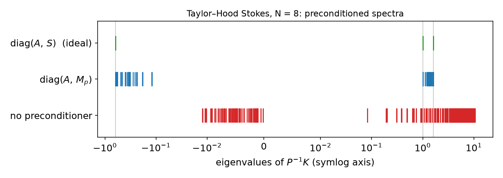
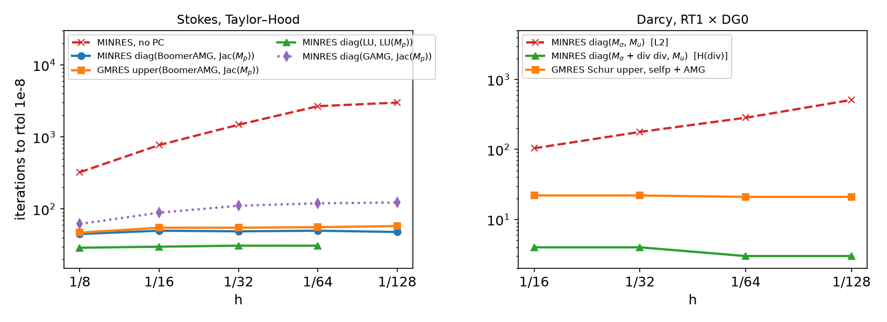
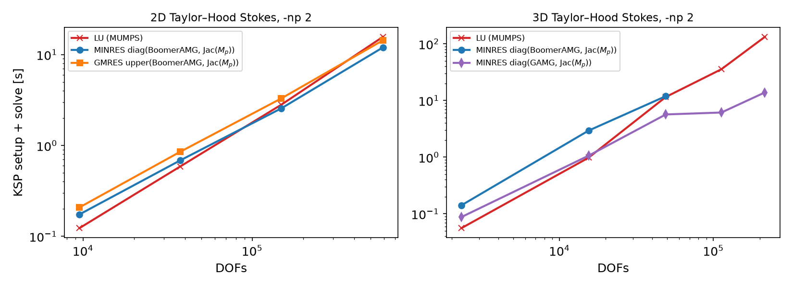

AI-based Materials and Process Simulation I
Week 12 — Solving Saddle-Point Systems: Schur Complement · Block Preconditioners · fieldsplit · Stokes and Darcy
Process Systems Laboratory
Department of Chemical and Biomolecular Engineering, SeoulTech
Today
| Part | Topic | Time |
|---|---|---|
| Quiz | Week 11 (Stokes, inf-sup, rates, P1–P1) | 10 min |
| A | Theory — Schur complement, block preconditioners, S\sim M_p, MINRES/GMRES, Darcy | 55 min |
| B | DOLFINx 0.11 + PETSc — blocked and nested systems, fieldsplit, null space |
40 min |
| C | Measurements — spectra, iterations vs h, time vs DOFs, Darcy | 30 min |
| D | LLM pitfalls with iterative solvers · HW11 | 15 min |
Lab notebook: W12_lab.ipynb · Homework: W12_HW11.ipynb (due before Week 13)
Where we are
| Week | Problem | Linear algebra |
|---|---|---|
| 5 | Poisson | SPD: CG + AMG, iterations \approx const in h |
| 9–10 | nonlinear, time-dependent | a linear solve per Newton step / time step |
| 11 | Stokes, discretized | MUMPS LU on the indefinite matrix |
| 12 | the same matrix, solved iteratively | block preconditioners built from Week 11’s \beta_h |
| 14–15 | Navier–Stokes | same structure, A non-symmetric, Schur complement depends on \mathbf u |
Week 11 used LU everywhere. LU is exact and robust — and its cost grows faster than the problem: in 3D, 14 times more DOFs made today’s factorization 135 times slower (0.98 s → 132 s). This week: why iterative solvers work for saddle points, and how to make them h-independent.
Part A — Theory
§A1 The saddle-point matrix
\mathscr K=\begin{pmatrix}A&B^\top\\B&0\end{pmatrix},\qquad A_{ij}=\mu\!\int\nabla\boldsymbol\phi_j:\nabla\boldsymbol\phi_i,\quad B_{kj}=-\!\int\psi_k\,\nabla\cdot\boldsymbol\phi_j,\quad (M_p)_{kl}=\int\psi_k\psi_l .
- A (n\times n) SPD, B (m\times n), m<n. Week 11 HW Q1: \mathscr K has n positive and m negative eigenvalues (one zero for the pressure constant).
- Indefinite ⇒ CG is not defined (its energy “norm” is not a norm). Krylov methods for symmetric indefinite matrices: MINRES; for anything: GMRES.
- Unpreconditioned, the eigenvalues of \mathscr K (Taylor–Hood, unit square, \mu=1) spread as the mesh is refined:
| N | 4 | 8 | 16 |
|---|---|---|---|
| \max|\lambda|/\min|\lambda| | 1.65\times10^4 | 6.86\times10^4 | 2.77\times10^5 |
Factor 4 per refinement, \propto h^{-2}, like the Poisson stiffness matrix. MINRES without preconditioner: about 320, 770, 1480, 2670 iterations for N=8,\dots,64.
§A2 Block factorization and the Schur complement
\begin{pmatrix}A&B^\top\\B&0\end{pmatrix} =\begin{pmatrix}I&0\\BA^{-1}&I\end{pmatrix} \begin{pmatrix}A&0\\0&-S\end{pmatrix} \begin{pmatrix}I&A^{-1}B^\top\\0&I\end{pmatrix},\qquad S=BA^{-1}B^\top .
- Solving \mathscr K\binom{\mathbf u}{p}=\binom{\mathbf f}{0} = two solves with A and one with S: S\,p=BA^{-1}\mathbf f, then A\mathbf u=\mathbf f-B^\top p (the pressure Schur complement method / Uzawa).
- S is SPD on L^2_0 but dense (A^{-1} inside). Never form it; approximate it.
Definition — Schur complement and the inf-sup constant (Week 11)
\beta_h^2=\lambda_{\min}(S,M_p) on L^2_0 (with \mu=1). The discrete inf-sup condition says exactly: the generalized eigenvalues of (S,M_p) are bounded away from 0, uniformly in h.
§A3 Ideal block preconditioners
Theorem (Murphy, Golub, Wathen 2000)
With \mathscr P_D=\begin{pmatrix}A&0\\0&S\end{pmatrix}, the matrix \mathscr P_D^{-1}\mathscr K has at most three distinct eigenvalues: 1,\ \tfrac{1\pm\sqrt5}{2}. MINRES with \mathscr P_D converges in at most 3 iterations.
Proof sketch: \mathscr P_D^{-1}\mathscr K\binom{\mathbf u}{p}=\lambda\binom{\mathbf u}{p} ⇔ \mathbf u+A^{-1}B^\top p=\lambda\mathbf u, S^{-1}B\mathbf u=\lambda p. If \lambda\ne1: \mathbf u=A^{-1}B^\top p/(\lambda-1) ⇒ S p=\lambda(\lambda-1)Sp ⇒ \lambda^2-\lambda-1=0.
- Block triangular \mathscr P_U=\begin{pmatrix}A&B^\top\\0&-S\end{pmatrix}: \mathscr K\mathscr P_U^{-1}=\begin{pmatrix}I&0\\BA^{-1}&I\end{pmatrix}, so (\mathscr K\mathscr P_U^{-1}-I)^2=0 — GMRES in 2 iterations (non-symmetric: not MINRES).
- Full LDU = exact solve, 1 iteration. All three need S^{-1}, which is as hard as the original problem — next slide.
§A4 Spectral equivalence: replace S by the pressure mass matrix
Lemma (Stokes)
For \mathbf v\in H^1_0: \|\nabla\cdot\mathbf v\|_0\le|\mathbf v|_1. With the discrete inf-sup constant \beta_h: \beta_h^2\,q^\top M_p q\ \le\ q^\top S q\ \le\ q^\top M_p q\qquad\forall q\perp 1 \qquad(\mu=1). For viscosity \mu: S=\mu^{-1}BA_1^{-1}B^\top ⇒ use \mu^{-1}M_p.
With \mathscr P=\mathrm{diag}(A,\hat S) and \sigma\in\operatorname{eig}(\hat S^{-1}S), the same algebra as in §A3 gives \lambda=1\quad\text{or}\quad\lambda=\frac{1\pm\sqrt{1+4\sigma}}{2},\qquad \sigma\in[\beta_h^2,1]. Taylor–Hood, \hat S=M_p: \sigma\in[0.1336,\,1.0000], \beta_h=0.366 (Week 11’s value) ⇒ \lambda\in[-0.618,-0.119]\cup[1,1.618] — for every N (measured: N=4,8,16).
Bounded spectrum on two intervals that do not depend on h ⇒ MINRES iterations bounded independently of h. The inf-sup constant is the convergence constant.
§A5 Cheap blocks: AMG and Jacobi
| Exact block | Replacement | Why it is enough |
|---|---|---|
| A^{-1} (vector Laplacian) | one AMG V-cycle (BoomerAMG, GAMG) | spectrally equivalent to A^{-1}, constants independent of h |
| S^{-1} | M_p^{-1} | Lemma in §A4 |
| M_p^{-1} | Jacobi: \mathrm{diag}(M_p)^{-1} | P1 triangles: \operatorname{eig}(D^{-1}M_p)\in[\tfrac12,2] exactly (measured, N=8,16) |
- Each replacement multiplies the interval bounds by constants independent of h: iterations stay bounded, each iteration costs O(\text{DOFs}).
- MINRES requires a symmetric positive definite preconditioner: \mathrm{diag}(A,M_p) ✓, \mathrm{diag}(A,-S) ✗, block triangular ✗ (use GMRES).
- MINRES: short recurrence, monotone residual (in the \mathscr P^{-1}-norm). GMRES: any preconditioner, memory grows with iterations (restart).
§A6 Darcy: a different Schur complement
Mixed Poisson / Darcy, \boldsymbol\sigma=-K\nabla u, \nabla\cdot\boldsymbol\sigma=f, RT1 × DG0: \begin{pmatrix}M_\sigma&B^\top\\B&0\end{pmatrix},\qquad (M_\sigma)_{ij}=\int K^{-1}\boldsymbol\phi_j\cdot\boldsymbol\phi_i,\quad B_{kj}=-\int\psi_k\nabla\cdot\boldsymbol\phi_j .
- Now A=M_\sigma is a mass matrix and S=BM_\sigma^{-1}B^\top is a discrete Laplacian on DG0: \operatorname{eig}(M_u^{-1}S)\in[19.8,\,2304] (N=8), [19.8,\,9216] (N=16) — ratio \propto h^{-2}.
- So \mathrm{diag}(M_\sigma,M_u) — the “Stokes recipe” — is wrong here: the problem is well-posed in H(\mathrm{div})\times L^2, not L^2\times L^2.
Two remedies:
- Riesz map of H(\mathrm{div}): \mathrm{diag}\big(M_\sigma+(\nabla\cdot,\nabla\cdot),\ M_u\big). For RT1/DG0, (\nabla\cdot\boldsymbol\sigma,\nabla\cdot\boldsymbol\tau)=B^\top M_u^{-1}B exactly; preconditioned eigenvalues: 1 and [-1,-0.952].
- Algebraic: \hat S=B\,\mathrm{diag}(M_\sigma)^{-1}B^\top (PETSc
selfp) — a sparse, Laplacian-like matrix on which AMG works.
Rule (Mardal–Winther): the preconditioner is the Riesz map of the spaces in which the continuous problem is well-posed.
§A7 Preview: Navier–Stokes and PCD (Weeks 14–15)
A\ \to\ F=\mu\,\text{Laplacian}+\text{convection}(\mathbf u_k)\quad\text{(non-symmetric)},\qquad S=BF^{-1}B^\top .
- M_p/\mu is no longer spectrally equivalent to S when convection dominates: iterations grow with the Reynolds number.
- Pressure convection–diffusion (PCD): S^{-1}\approx M_p^{-1}F_pA_p^{-1}, with F_p,A_p a convection–diffusion operator and a Laplacian on the pressure space.
fenicsx-pctools(Rehor & Hale) implements PCD as a PETSc Python preconditioner insidefieldsplit. Its backward-facing-step demo runs on DOLFINx 0.11 after three small API fixes: 4 Newton steps, 19–31 GMRES iterations each (Re = 100, local run).- Week 15: lid-driven cavity with Reynolds-number continuation; iteration counts with PCD vs M_p.
Part B — DOLFINx 0.11 + PETSc
§B1 Three ways to assemble the same system
| Monolithic | Blocked | Nested | |
|---|---|---|---|
| Spaces | one mixed_element([P2v, P1]) |
two spaces V, Q |
two spaces V, Q |
| Forms | one form | [[a00, a01], [a10, None]] |
same list |
| Matrix | MPIAIJ, interleaved DOFs |
MPIAIJ, block layout per rank |
MATNEST of four sub-matrices |
kind= |
— | None (default) |
"nest" |
| fieldsplit index sets | from W.sub(i).collapse() maps |
you compute offsets | automatic (getNestISs) |
| Direct solver | MUMPS ✓ | MUMPS ✓ | MUMPS ✓ (same solution as blocked) |
Same Taylor–Hood MMS, N=16, -np 2: monolithic (MUMPS), nested (MINRES) and blocked (MINRES) give \|\mathbf u-\mathbf u_h\|_0=9.7063\times10^{-5} to all printed digits; \|\mathbf u_{\text{nest}}-\mathbf u_{\text{mono}}\|_0=2.6\times10^{-11}.
§B2 The blocked system in code
a = fem.form([[mu * inner(grad(u), grad(v)) * dx, -p * div(v) * dx],
[-q * div(u) * dx, None]])
a_p = fem.form([[mu * inner(grad(u), grad(v)) * dx, None],
[None, p * q / mu * dx]]) # diag(A, Mp/mu)
A = assemble_matrix(a, bcs=[bc]); A.assemble()
P = assemble_matrix(a_p, bcs=[bc]); P.assemble()
b = assemble_vector(L, kind="mpi") # L = [f.v dx, ZeroBaseForm((q,))]
apply_lifting(b, a, bcs=bcs_by_block(extract_function_spaces(a, 1), [bc]))
b.ghostUpdate(PETSc.InsertMode.ADD, PETSc.ScatterMode.REVERSE)
set_bc(b, bcs_by_block(extract_function_spaces(L), [bc]))
Vm, Qm = V.dofmap.index_map, Q.dofmap.index_map
nu = Vm.size_local * 2 # owned velocity rows
off = Vm.local_range[0] * 2 + Qm.local_range[0]
is_u = PETSc.IS().createStride(nu, off, 1, comm=comm)
is_p = PETSc.IS().createStride(Qm.size_local, off + nu, 1, comm=comm)is_u,is_p: the global rows of each field in the blocked matrix —fieldsplitneeds them to cut out the blocks.- Pressure constant: a
PETSc.NullSpacewith the vector (0,\dots,0,1,\dots,1), attached toA(and removed fromb).
§B3 fieldsplit options
ksp.setOperators(A, P) # operator K, preconditioner matrix P
pc.setType("fieldsplit"); pc.setFieldSplitIS(("u", is_u), ("p", is_p))
opts = {"ksp_type": "minres", "ksp_rtol": 1e-8,
"pc_fieldsplit_type": "additive", # block diagonal
"fieldsplit_u_ksp_type": "preonly",
"fieldsplit_u_pc_type": "hypre", # one BoomerAMG V-cycle on A
"fieldsplit_p_ksp_type": "preonly",
"fieldsplit_p_pc_type": "jacobi"} # Jacobi on Mp/mupc_fieldsplit_type |
meaning | with |
|---|---|---|
additive |
\mathrm{diag}(\hat A,\hat S) | MINRES (SPD blocks) |
schur + schur_fact_type diag/lower/upper/full |
the factors of §A2 with \hat A, \hat S | GMRES (FGMRES if inner solves are Krylov) |
schur_precondition a11 / selfp / user |
\hat S from P_{11} / B\,\mathrm{diag}(A)^{-1}B^\top / your matrix | Stokes: a11 with P_{11}=M_p/\mu; Darcy: selfp |
Nested systems name the splits 0, 1 (fieldsplit_0_pc_type, …); blocked systems use the names you gave in setFieldSplitIS. High level: LinearProblem(a, L, bcs=..., P=a_p, kind="nest", petsc_options={...}).
§B4 Details: the pressure constant and nested matrices
- Singular matrix and LU: with the null space instead of a pinned DOF, tell MUMPS:
mat_mumps_icntl_24 = 1(null-pivot detection). - Pinning a pressure DOF in a blocked form needs an explicit zero block, otherwise 0.11 refuses:
RuntimeError: Diagonal sub-block (1, 1) cannot be 'None' and have DirichletBC applied. Consider assembling a zero block.
- Pin vs null space with MINRES: 50, 49, 50 iterations with the null space, 71, 49, 50 with a pinned DOF (N=16,32,64; same errors). The null space is the natural choice for iterative solvers; the pin for LU.
assemble_matrix(a, kind="nest")for a form with aNoneblock and nobcsraisesTypeError: 'NoneType' object is not iterablein 0.11 — passbcs=[].
Part C — Measurements
§C1 Preconditioned spectra

N=8: no preconditioner \max|\lambda|/\min|\lambda|=6.9\times10^4; \mathrm{diag}(A,M_p): 13.5 (13.4, 13.5, 13.6 for N=4,8,16); \mathrm{diag}(A,S): exactly \{-0.618,\,1,\,1.618\}, ratio 2.618. The negative interval ends at (1-\sqrt{1+4\beta_h^2})/2=-0.119.
§C2 Iterations vs h

Stokes (rtol 10^{-8}, -np 2): diag(LU, LU(M_p)) 29–31; diag(BoomerAMG, Jacobi) 45–50; upper Schur (BoomerAMG, Jacobi) 47–58 — flat. GAMG with default options: 62 → 123 — not quite flat (an AMG is not automatically h-independent for P2 vector problems).
§C3 Viscosity scaling and the stopping test
| \mu | P_{11}=M_p/\mu | P_{11}=M_p |
|---|---|---|
| 1 | 49 | 49 |
| 10^{-2} | 53 | 79 |
| 10^{-4} | 55 | 106 |
MINRES, diag(BoomerAMG, Jacobi), N=32. Same answers, more iterations: the unscaled block is spectrally equivalent with constants \propto\mu^{-1}.
The tolerance is relative to the preconditioned residual, not the error. N=256, rtol 10^{-8}: MINRES \|\mathbf u-\mathbf u_h\|_0=2.57\times10^{-8}, LU 2.38\times10^{-8} — the algebraic error is already visible. Rule: tighten rtol until the discretization error stops changing (Week 7, again).
§C4 Time vs DOFs: 2D and 3D

KSP setup + solve, minimum of two runs, -np 2 on the build machine (Colab has 2 slow cores — measure there). Same solutions: |x_{it}-x_{LU}|/|x_{LU}|\le2.3\times10^{-7} in 3D.
§C4 Growth factors
| DOFs | LU (MUMPS) | MINRES diag(AMG, Jacobi) | |
|---|---|---|---|
| 2D, N=32\to256 | 9.5 k → 592 k (×62) | 0.12 → 15.7 s (×130) | 0.17 → 12.0 s (×70, BoomerAMG) |
| 3D, N=8\to20 | 15 k → 216 k (×14) | 0.98 → 132 s (×135) | 1.06 → 13.8 s (×13, GAMG) |
- 2D: sparse LU (nested dissection, O(n^{1.5}) flops) is hard to beat on a laptop.
- 3D: separators are larger (O(n^2) flops, O(n^{4/3}) memory) — LU and MINRES tie near 1.5\times10^4 DOFs, and LU memory runs out before its time does.
- Single timings scatter by tens of percent between runs on a shared machine: compare growth factors over a wide range, not two neighboring points.
§C5 Darcy: L² vs H(div) preconditioners
| N | DOFs | diag(M_\sigma,M_u) [L²] | diag(M_\sigma+\nabla\!\cdot\nabla\!\cdot,\,M_u) [H(div)] | Schur upper, selfp + AMG |
|---|---|---|---|---|
| 16 | 1 312 | 104 | 4 | 22 |
| 32 | 5 184 | 178 | 4 | 22 |
| 64 | 20 608 | 284 | 3 | 21 |
| 128 | 82 176 | 510 | 3 | 21 |
MINRES / GMRES iterations to rtol 10^{-8}, K=1, u=\sin\pi x\sin\pi y, -np 2. LU errors: \|u-u_h\|_0=4.09\times10^{-3}, \|\boldsymbol\sigma-\boldsymbol\sigma_h\|_0=1.57\times10^{-2} at N=128 (rate 1).
- L²: iterations \propto h^{-1} — the wrong norm. H(div) with an exact block (LU): 3–4 — the eigenvalue clusters of §A6.
selfp+ AMG: 21–22 and scalable. - For heterogeneous K the weights matter: HW11 Q3.
§C6 JIT: the first call is not a measurement
LinearProblem(...) construction, Taylor–Hood N=8, -np 2 |
time |
|---|---|
| a new form (code generated, compiled) | 2.38 s |
| the same form again (JIT cache) | 0.05 s |
The solve itself: 0.01–0.02 s. Time the solver (ksp.solve incl. setup), after the forms exist; run the smallest case once before timing.
Part D — LLMs and Iterative Solvers · HW11
§D1 Where LLM-generated solver code goes wrong
| Kind | What it looks like | Symptom |
|---|---|---|
| Viscosity ignored | P_{11}=M_p for \mu\ne1 | same answer, more iterations (49 → 106 for \mu=10^{-4}, §C3) |
| Recipe transferred | the Stokes block diagonal \mathrm{diag}(A,M) for Darcy | iterations \propto h^{-1} (104 → 510, §C5) |
| JIT in the timing | the first LinearProblem or fem.form inside the timer |
2.4 s of compilation in a 0.02 s solve (§C6) |
| Pin in a blocked form | dirichletbc on the pressure with a None (1,1) block |
RuntimeError (§B4) |
| Constant pressure | neither a pinned DOF nor a null space | LU: a pressure shifted by an arbitrary constant, or a failed factorization (Week 11) |
| Older API | fem.petsc.create_vector_block, assemble_matrix_block (not in 0.11) |
AttributeError |
Verification habit: first the discretization (Week 11’s MMS rates), then the solver — iterations vs h and \mu, and the answer against something you trust.
HW11 — solver iterations and time, due before the Week 13 lecture
W12_HW11.ipynb (100 pts)
- Q1 (20) Theory: preconditioned eigenvalues with \hat S\ne S, the triangular preconditioner, Darcy’s Schur complement
- Q2 (40) 3D Stokes: LU vs two block preconditioners; iterations, time, slopes, agreement with LU
- Q3 (20) Darcy with a high-contrast permeability: which preconditioner survives?
- Q4 (20) LLM debugging: a solver benchmark with four bugs
Rules as always: Restart session and run all, -np 2 where stated, the AI-usage log, numbers only from your own cells.
Timings vary between runs: report what you measured, compare growth over a wide range, and never compare a converged solve with a failed one.
Summary
| Concept | Key idea | DOLFINx 0.11 / PETSc |
|---|---|---|
| Saddle point | indefinite: MINRES or GMRES, not CG | ksp_type minres / gmres |
| Schur complement | S=BA^{-1}B^\top, dense; \beta_h^2=\lambda_{\min}(S,M_p) | never formed |
| Ideal preconditioners | diag: 3 eigenvalues; triangular: GMRES in 2 | pc_fieldsplit_type schur, fact_type diag/upper/full |
| Stokes | S\sim M_p/\mu with constants \beta_h^2, 1 | P=[[A, None], [None, Mp/mu]], additive |
| Darcy | S\sim Laplacian: use H(div) or selfp |
schur_precondition selfp |
| Practice | AMG for A, Jacobi for M_p; null space for the pressure constant | fieldsplit_u_pc_type hypre, NullSpace, icntl_24 |
| Cost | 2D: LU competitive; 3D: block preconditioners win | time vs DOFs slopes |
Next week — advection–diffusion: Péclet number, Galerkin oscillations, SUPG; HW12.